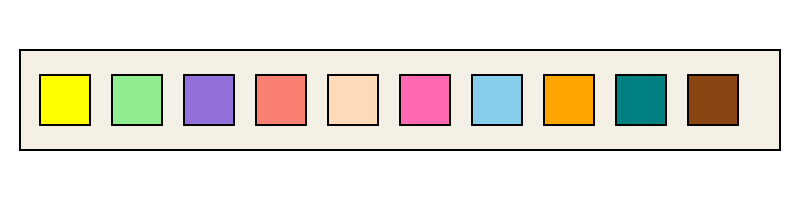

Home
Test Information
About the System
Test Parameters
Urine Strip
Patient Report
Registration
Media
Test Kits
Navigation
Urine Test Strip
Click on a reagent pad to learn about that test.

Featured Strip Images